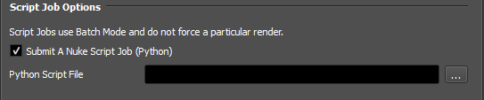
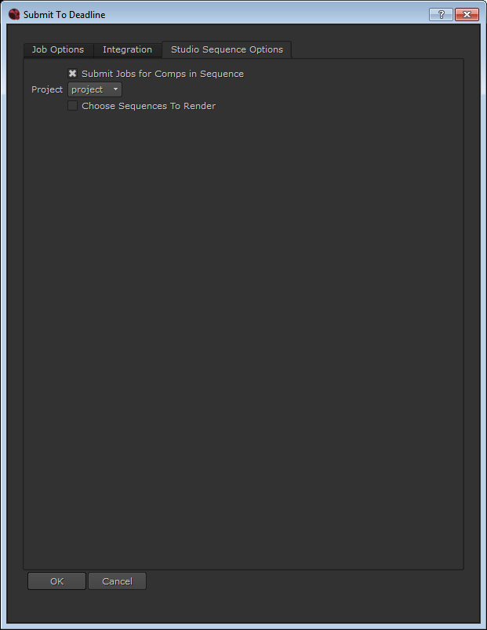
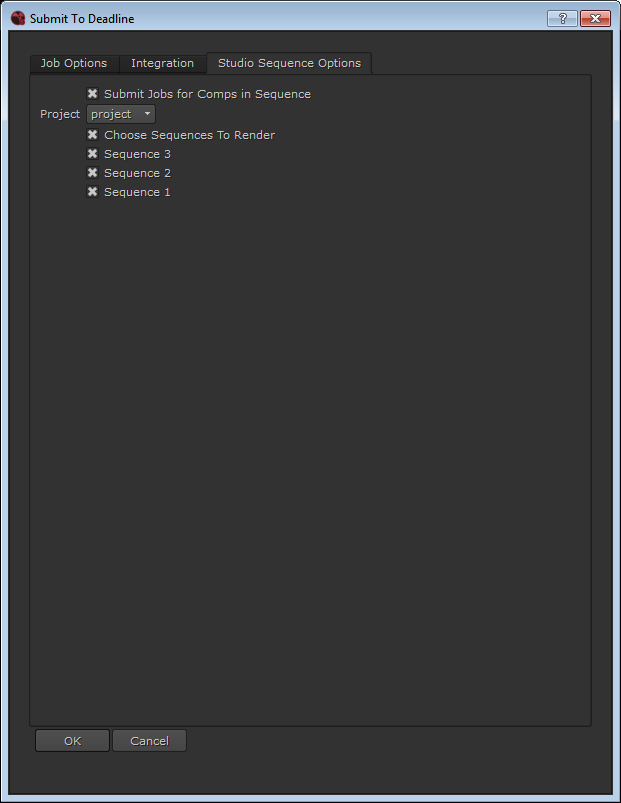

Nuke¶
Render Job Submission¶
You can submit jobs from within Nuke by installing the integrated submission script, or you can submit them from the Monitor. The instructions for installing the integrated submission script can be found further down this page.
To submit from within Nuke, select Submit To Deadline from the Thinkbox menu.


Submission Options¶
The general Deadline options are explained in the Job Submission documentation, and the Draft/Integration options are explained in the Draft and Integration documentation. The Nuke specific options are:
Render With NukeX: Enable this option if you want to render with NukeX instead of Nuke.
Use Batch Mode: If enabled, Deadline will keep the Nuke file loaded in memory between tasks.
Render Threads: The number of threads to use for rendering.
Use The GPU For Rendering: If Nuke should also use the GPU for rendering (Nuke 7 and later only).
Use Specific GPU Override: If Nuke should use the specified GPU, otherwise the Workers GPU Affinity will be used ( Nuke 8 and later only ).
Maximum RAM Usage: The maximum RAM usage (in MB) to be used for rendering.
Enforce Write Node Render Order: Forces Nuke to obey the render order of Write nodes.
Minimum Stack Size: The minimum stack size (in MB) to be used for rendering. Set to 0 to not enforce a minimum stack size.
Continue On Error: If enabled, Nuke will attempt to keep rendering if an error occurs.
Reload Plugin Between Tasks: If enabled, Nuke will be restarted between tasks. This can add overhead, but ensures that Nuke’s memory is flushed between tasks.
Use Performance Profiler: If enabled, Nuke will profile the performance of the Nuke script while rendering and create a xml file per task for later analysis (Nuke 9 and later only).
XML Directory: If Use Performance Profiler is enabled, this is the directory on the network where the performance profile xml files will be saved.
Render Mode: Use scene settings, the proxy file paths, or force Nuke to use full resolution when rendering.
Choose Views To Render: Enable this option to choose which view(s) to render. By default, all views are rendered.
Submit Write Nodes As Separate Jobs: Each write node is submitted as a separate job.
Use Node’s Frame List: If submitting each write node as a separate job or task, enable this to pull the frame range from the write node, instead of using the global frame range.
Set Dependencies Based on Write Node Render Order: When submitting write nodes as separate jobs, this option will make the separate jobs dependent on each other based on write node render order.
Submit Write Nodes As Separate Tasks For The Same Job: Enable to submit a job where each task for the job represents a different write node, and all frames for that write node are rendered by its corresponding task.
Selected Nodes Only: If enabled, only the selected Write nodes will be rendered.
Nodes With ‘Read File’ Enabled Only: If enabled, only the Write nodes that have the ‘Read File’ option enabled will be rendered.
Render Precomp Nodes First: If enabled, all write nodes in precomp nodes will be rendered before the main job.
Only Render Precomp Nodes: If enabled, only the Write nodes that are in precomp nodes will be rendered.
Only Simulate Eddy Nodes: If enabled, only the Eddy Nodes will be simulated.
The Submit Each Write Node As A Separate Task option can be useful if you have a bunch of write nodes in a Nuke script to output different Quicktime movies. You can enable this option, and bump up the Concurrent Tasks value to allow machines to process multiple write nodes concurrently. Since Quicktime generation only uses a single thread, you can get much better throughput with this option on multi-core machines.
Nuke Script Job¶
To run a Nuke Script Job, select the Nuke Script Job type.
This job will execute a submitted Python file.
The following options are available:
Script File Name: The directory and name of the Python file that will be run.
Pipeline Tools¶
When using the integrated submitter to submit through Nuke you have the ability to use any of the event plugins that you have enabled through the Deadline Monitor. This is done by opening the Pipeline Tools window via the Pipeline Tools button. This window is explained further in the Pipeline Tools documentation.
Nuke Vray Standalone Submission¶
You can submit V-Ray Standalone Jobs from within Nuke by installing the integrated submission script.
To submit from within Nuke, select Submit V-Ray Standalone to Deadline from the Thinkbox menu.
Submission Options¶
The general Deadline options are explained in the Job Submission documentation, and the Draft/Integration options are explained in the Draft and Integration documentation. The Nuke specific options are:
Output File: The name of the output file from the V-Ray Render.
Cross-Platform Rendering Considerations¶
In order to perform cross-platform rendering with Nuke, you must setup Mapped Paths so that Deadline can swap out Read Node and Write Node file paths where appropriate. You can access the Mapped Paths Setup in the Monitor while in power user mode by selecting Tools -> Configure Repository. You’ll find the Mapped Paths Setup in the list on the left.
Plugin Configuration¶
You can configure the Nuke plugin settings from the Monitor. While in power user mode, select Tools -> Configure Plugins and select the Nuke plugin from the list on the left.

Render Executables
Nuke Executable: The path to the Nuke executable file used for rendering. Enter alternative paths on separate lines. Different executable paths can be configured for each version installed on your render nodes. Note that the versions supported are the MAJOR.MINOR (9.0 or 9.1) versions of Nuke. If you wish to run a particular REVISION of Nuke then you will need to change the actual exe path under 9.0v1 to actually point at say, the 9.0v8 version. We don’t directly support MAJOR.MINOR.REVISION’s of Nuke, but rather just the first two levels MAJOR.MINOR and leave the specific REVISION to a studio to control. Multiple exe paths can still be declared and the first one that is found on a Worker will be used from the exe list.
Licensing Options
Workers To Use Interactive License: A list of Workers that should use an interactive Nuke license instead of a render license. Use a , to separate multiple Worker names, for example: worker001,worker002,worker003
OFX Cache
Prepare OFX Cache Before Rendering: If enabled, Deadline will try to create the temporary ofxplugincache folder before rendering, which helps ensure that comps that use OFX plugins render properly.
Path Mapping (For Mixed Farms)
Enable Path Mapping: If enabled, a temporary Nuke file will be created locally on the Worker for rendering because Deadline does the path mapping directly in the Nuke file. This feature can be turned off if there are no Path Mapping entries defined in the Repository Options.
Nuke Studio Sequence Submission¶
If you are using Nuke Studio you can submit individual comps to Deadline from the Integrated Submitter as you would in Nuke or NukeX; however, there is also the option of submitting sequences of comps to Deadline as individual jobs. You can submit all the sequences’ comps for a project by selecting the project and submitting.
You can also choose which sequences you want to submit comps for
Note this is only an option in the Integrated Submitter in Nuke Studio. It is also required to have a saved project with sequences that have comps in order to have this option.
Integrated Submission Script Setup¶
The following procedures describe how to install the integrated Nuke submission script. This script allows for submitting Nuke render jobs to Deadline directly from within the Nuke editing GUI. Note that this has only been tested with Nuke version 6 to 12.1.
You can either run the Submitter installer or manually install the submission script.
Submitter Installer¶
Run the Submitter Installer located at
<Repository>/submission/Nuke/Installers.
Manual Installation¶
Copy the file:
[Repository]\submission\Nuke\Client\DeadlineNukeClient.py to your .nuke user folder (~/.nuke or %USERPROFILE%\.nuke)
If menu.py does not exist in your .nuke user folder, copy
[Repository]\submission\Nuke\Client\menu.pyto your .nuke user folder.If menu.py does exist, then open it in a text editor and add the following lines of code:
import DeadlineNukeClient menubar = nuke.menu("Nuke") tbmenu = menubar.addMenu("&Thinkbox") tbmenu.addCommand("Submit Nuke To Deadline", DeadlineNukeClient.main, "")
Verify Installation¶
The next time you launch Nuke, there should be a Thinkbox menu with the option to Submit Nuke to Deadline.
To manually install the Submit V-Ray Standalone submitter you will need to add the following lines of code to your menu.py:
try: import DeadlineNukeVrayStandaloneClient tbmenu.addCommand("Submit V-Ray Standalone to Deadline", DeadlineNukeVrayStandaloneClient.main, "") except: pass
Custom Sanity Check¶
A CustomSanityChecks.py file can be created alongside the main SubmitNukeToDeadline.py submission script (in [Repository]\submission\Nuke\Main), and will be evaluated if it exists. This script will let you set any of the initial properties in the submission script prior to displaying the submission window. You can also use it to run your own checks and display errors or warnings to the user. Here is a very simple example of what this script could look like:
import nuke
import DeadlineGlobals
def RunSanityCheck():
DeadlineGlobals.initDepartment = "The Best Department!"
DeadlineGlobals.initPriority = 33
DeadlineGlobals.initConcurrentTasks = 2
nuke.message("This is a custom sanity check!")
return True
The DeadlineGlobals module can be found in the same folder as the SubmitNukeToDeadline.py script mentioned above. It just contains the list of global variables that you can set, which are then used by the submission script to set the initial values in the submission dialog. Simply open DeadlineGlobals.py in a text editor to view the global variables.
Finally, if the RunSanityCheck method returns False, the submission will be cancelled.
FAQ¶
Which versions of Nuke are supported?
Nuke 6 to 16.0 are supported.
Can I render with NukeX instead of Nuke?
Yes. Simply enable the Render With NukeX option when submitting your Nuke job.
What’s the benefit to using Batch Mode?
If enabled, Deadline will keep the Nuke file loaded in memory between tasks. This can help reduce overhead, because the Nuke file is only loaded once when the job is started on the Worker.
Is Nuke Studio Supported?
Yes. It functions the same way as Nuke with the additions of Sequence Submission and Frame Server rendering.
In Nuke Studio, when clicking the Submit button in the Deadline Submitter window: The current Nuke project contains no saved comps that can be rendered. Please save any existing Nuke scripts before submitting to Deadline.
It is likely that Nuke Studio did not load the individual elements of your project. Double click any project component (e.g. composition, sequence, clip) and ensure that its content is reflected in the Viewer and Node Graphs windows.
Nuke render fails as write node’s output directory does not exist
As a write node’s render file path can sometimes be dynamically generated at render time, it is recommended to implement a beforeRender callback within your studio’s Nuke setup.
Can I use 3rd party plugins such as Peregrine Lab’s Bokeh plugin with Nuke via Deadline?
Yes. Ensure all machines have the same plugin software installed locally or via a network where applicable (depending on your studio pipeline/software deployment management and if the plugin in question supports deployment in this manner). Ensure any neccessary environment variables required are also present on each Worker. In the case of Peregrine Lab’s Bokeh plugin, ensure the Workers have the environment variable available: “PEREGRINE_LICENSE=port@hostname”, where port & hostname are your license server details. Environment variables can be set for a job in Deadline, and these variables will be applied to the rendering process’ environment. These variables can be set in the Job Properties in the Monitor, and they can be set during Manual Job Submission.
Can I export my scene and render using V-Ray Standalone?
Yes. You are able to submit your scene using the Nuke V-Ray Standalone submitter. This submitter will export the Nuke scene as a *.vrscene file locally and then submit a render job using the V-Ray Standalone plugin.
Error Messages and Meanings¶
This is a collection of known Nuke error messages and their meanings, as well as possible solutions. We want to keep this list as up to date as possible, so if you run into an error message that isn’t listed here, please visit the Thinkbox Help Centre and let us know.
Nuke out-of-license errors
A number of issues beyond the control of Deadline may be causing this situation to arise on your render farm. Please consider the following possible scenarios:
One or more Nuke (
renderorinteractiveif applicable) licenses are being used in a Nuke process outside of the Deadline ecosystem which Deadline is unaware of. This could be an artist/TD executing a py/shell/batch script for some local Nuke processing, consuming a Nuke-rlicense.The order in which Nuke
featuresare declared in your Nuke license file can make a difference. Say you have a temporary license and then buy a permanent license, but the permanent feature is added to the end of your license file. As a result, Nuke will try to grab the temporary license first. If that feature happens to be expired then it doesn’t continue down the list and try again. We understand that this situation can possibly be resolved by having Foundry support regenerate your Nuke license file for you.

{kind=link}
{kind=link}
{kind=link}
{kind=link}